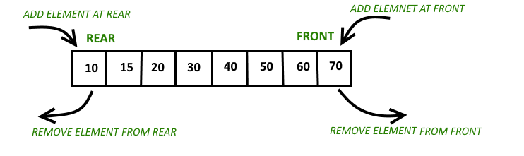

Cuprins

Cozile cu două capete sunt containere de secvențe ce se caracterizeaza prin o extindere și contracție la ambele capete. Ele sunt asemănătoare vectorilor, dar sunt mai eficiente în cazul inserării și ștergerii elementelor. Spre deosebire de vectori, este posibil ca alocarea de stocare contiguă să nu fie garantată. Cozile de aşteptare duble sunt practic o implementare a structurii de date cozi de aşteptare dublu.
O structură de date în coadă permite inserarea doar la sfârșit și ștergerea din față. Poate fi percepută ca o coadă în viața reală, în care oamenii sunt înlăturați din față și adăugați în spate. Cozile cu două capete sunt un caz special de cozi în care operațiunile de inserare și ștergere sunt posibile la ambele capete.
Funcțiile pentru deque sunt aceleași ca la cozile clasice, cu o adăugare de operații push și pop atât pentru față, cât și pentru spate. Pentru declararea unei cozi cu două capete trebuie inclusă biblioteca <deque>, unde se află funcții de manipulare a acestui container
🟩 Accesarea elementelor - O(1)
🟩 Introducerea sau îndepărtarea elementelor - O(N)
🟩 Introducerea sau îndepărtarea elementelor la început sau la sfârșit - O(1)
Funcția |
Descriere |
|---|---|
| insert() | Inserează un element |
| rbegin() | Returnează un iterator inversat care indică spre ultimul element al deque-ului (începutul inversat) |
| rend() | Returnează un iterator inversat care indică spre poziția înainte de începutul deque-ului (considerat sfârșitul inversat) |
| cbegin() | Returnează un iterator constant ce arată spre primul element al containerului. Iteratorul nu poat fi utilizat pentru a modifica, doar pentru a traversa deque-ul |
| max_size() | Returnează numărul maxim de elemente pe care le poate conține un deque |
| assign() | Atribuie valori către același sau alt deque container |
| resize() | Funcție care schimbă lungimea deque-ului |
| push_back() | Este utilizată pentru a muta elemente într-un deque din spate |
| push_front() | Este utilizată pentru a muta elemente într-un deque din față |
| pop_back() | Este utilizată pentru a șterge elemente dintr-un deque din spate |
| pop_front() | Este utilizată pentru a șterge elemente dintr-un deque din față |
| back() | Este utilizată pentru a crea un punct de referință al ultimului element al deque container |
| front() | Este utilizată pentru a crea un punct de referință al primului element al deque container |
| clear() | Este utilizată pentru a șterge toate elementele din deque, lungimea devenind 0 |
| erase() | Este utilizată pentru a șterge elemente dintr-un container de la o pozitie sau un interval specific |
| empty() | Este utilizată pentru a verifica daca deque containerul este gol sau nu |
| size() | Este utilizat pentru a returna lungimea unui deque container sau numarul de elemente ale acestuia |
| operator "=" | Operatorul este utilizat pentru a atribui continut nou containerului, inlocuind continutul existent |
| operator "[]" | Operatorul este utilizat ca punct de referință al elementului prezent al poziției date în operator |
| at() | Este utilizată ca punct de referință al elementului prezent al poziției date ca parametru al funcții |
| swap() | Este utilizată pentru a interschimba conținutul unui deque cu conținutul altui deque de acelasi tip și lungime |
| begin() | Este utilizată pentru a returna un iterator ce arată spre primul element al unui deque container |
| end() | Este utilizată pentru a returna un iterator ce arată spre ultimul element al unui deque container |
| emplace_front() | Este utilizată pentru a insera un nou element in deque container. Noul element este adăugat la începutul deque-ului |
| emplace_back() | Este utilizată pentru a insera un nou element in deque container. Noul element este adăugat la finalul deque-ului |